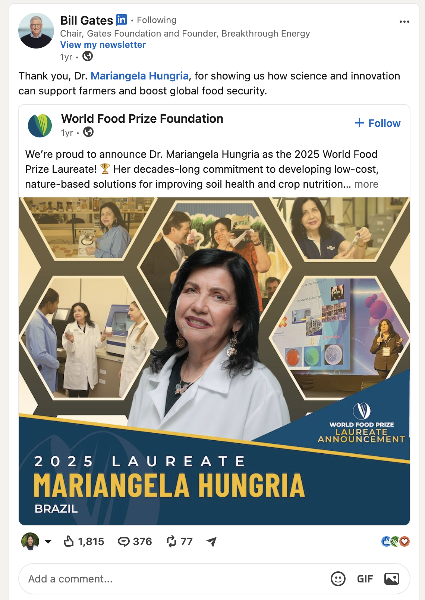
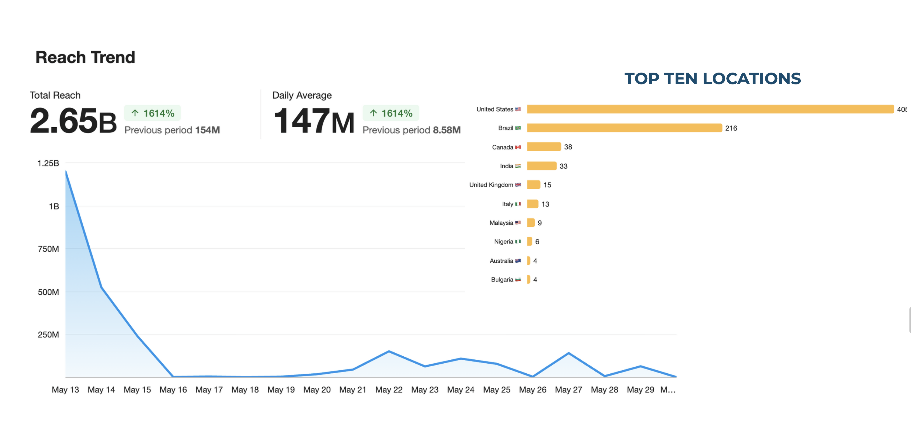
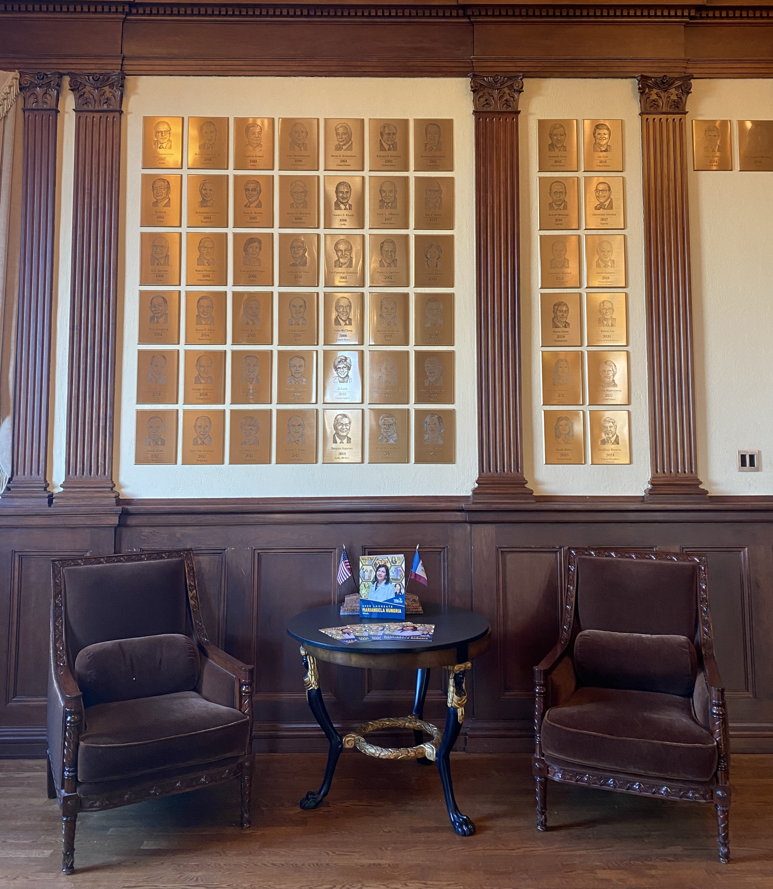

Laureate Announcement Brand Identity
World Food Prize, a nonprofit organization recognizes the achievements of individuals who have advanced human development by improving the quality, quantity, or availability of food in the world. This project is a marketing campaign to announce the laureate for the year 2025.

PROJECT SCOPE
This campaign was developed to announce the 2025 World Food Prize Laureate, Dr. Mariangela Hungria, whose groundbreaking research in biological nitrogen fixation has transformed sustainable agriculture globally. The campaign needed to maintain scientific credibility while clearly communicating her global impact in a way that donors and the general public could understand and celebrate.
TOOLS
These are the tools used to achieve the whole marketing campaign:

BRAND GUIDELINES
The campaign followed established World Food Prize brand guidelines — typography, color palette, and logo usage — to ensure consistency across all touchpoints.

CONCEPT SKETCH
A visual narrative centered on her story
The overall tone of the campaign is professional and elevated, reflecting the prestige of the honor while centering her story through imagery. I explored multiple ways to visually narrate her impact on the cover. The hexagon was the winner because it symbolizes the petri dishes that she uses to develop innovations.

SOCIAL MEDIA ACROSS ALL PLATFORMS
Social media board for external stakeholders
Social media graphics were created to promote the laureate announcement and invite organizations to join the movement. A Trello board with all graphics was shared publicly to increase promotion across partner channels. Content was posted across Facebook, Instagram, and X.
SOCIAL MEDIA
Designed for reach across every platform
Social media graphics were created to promote the laureate announcement and invite organizations to join the movement. A Trello board with all graphics was shared publicly to increase promotion across partner channels. Content was posted across Facebook, Instagram, and X.

SHORT-FORM VIDEOS WITH CAPTIONS FOR ACCESSIBILITY
WEBSITE BANNER ON THE ORGANIZATION'S WEBSITE

EMAIL NEWSLETTER
PRINT MATERIAL

AFTER THE ANNOUNCEMENT, THE STORY WAS FEATURED IN MAJOR NEWS SOURCES
A LINKEDIN REPOST FROM BILL GATES

BROADCASTED ON IOWA NEWS
RESULTS
The campaign and promotion was launched successfully
After months of work creating print and digital marketing materials, the announcement was published on our website and it led to global media reach of 2.65 Billion. Source: Meltwater

SNIPPETS OF THE LAUREATE ANNOUNCEMENT

A group photo of the marketing and communications team

A photo of the World Food Prize laureate holding the award at the Laureate Award Ceremony

The brochures are displayed at our laureate hall coffee table

A photo of four attendees smiling with the brochure, including Wendy Wintersteen, the former president of Iowa State University